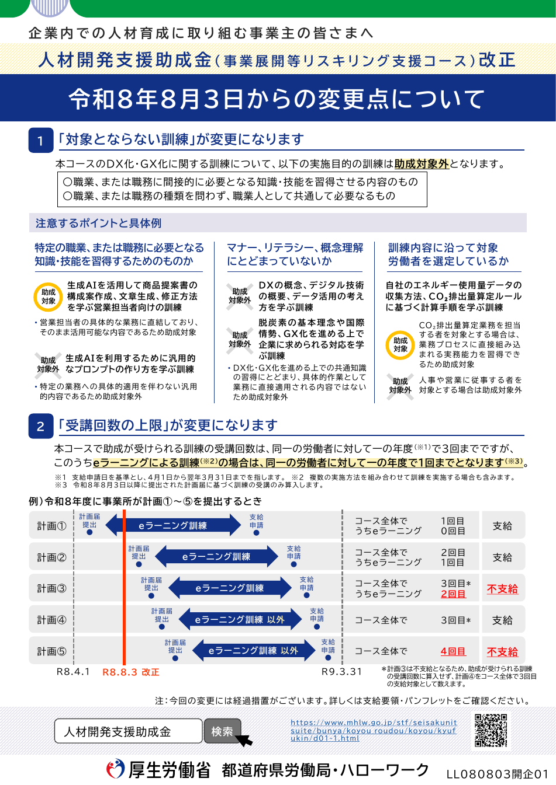
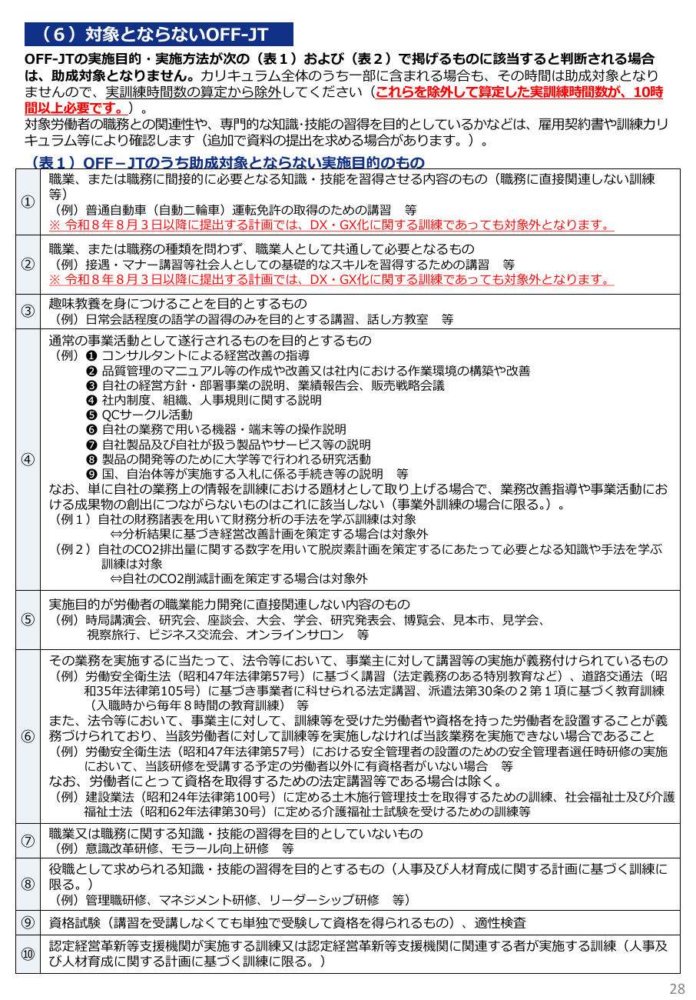
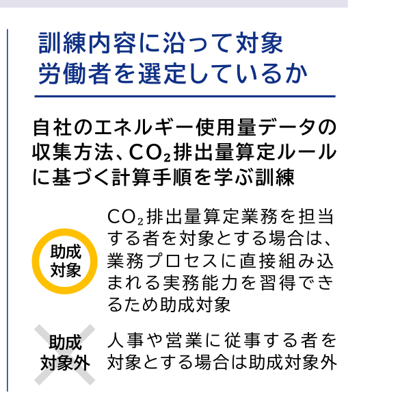
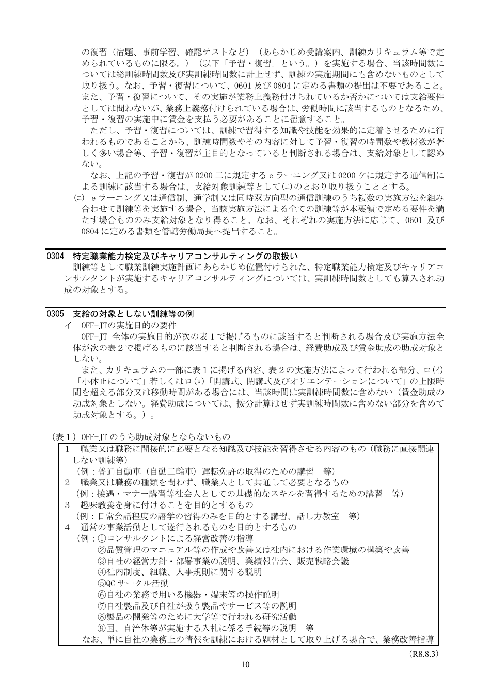
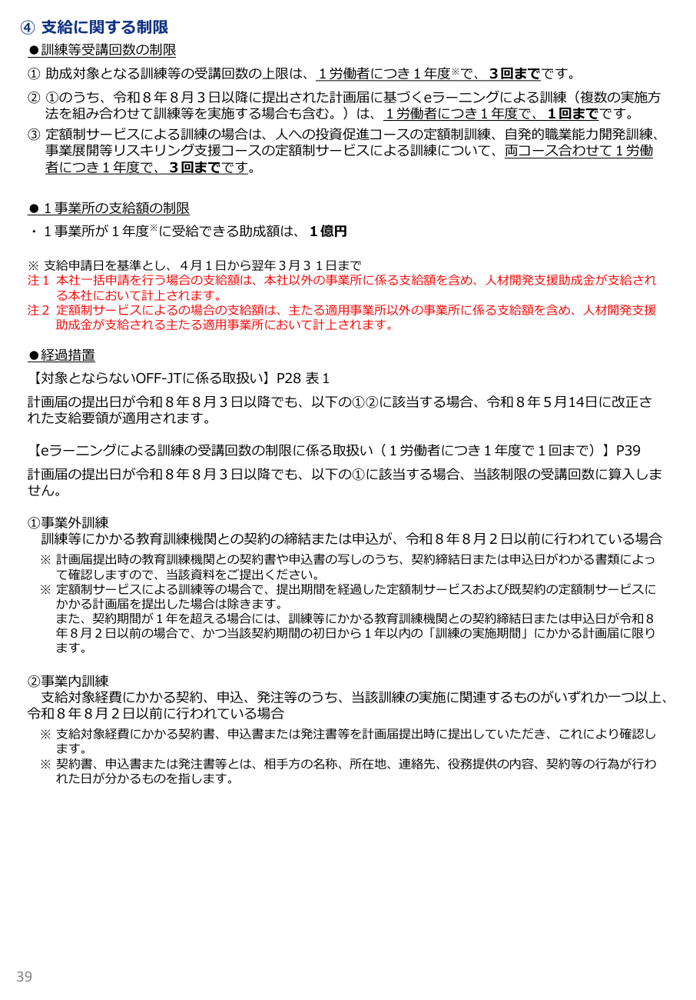

令和8年8月3日以降に提出される職業訓練実施計画届から、「対象とならない訓練」の範囲と「受講回数の上限」が変わりました。研修プログラムの設計・提案に直結する変更点を、厚生労働省の公表資料（パンフレット・支給要領・変更点リーフレット）に基づいて整理します。
変更点は2つ。「対象とならない訓練」の拡大と、eラーニングの受講回数上限です。

従来、本コースのDX・GX関連訓練には「企業内でDX・GX化を進める上で必要となる知識及び技能を習得させるための訓練等である場合は除く」という例外があり、デジタルリテラシー型の研修も助成対象になり得ました。今回の改正でこの例外が撤廃され、次の2類型はDX・GX訓練であっても助成対象外となります。
| 対象外となる実施目的 | 例 |
|---|---|
| 職業・職務に間接的に必要となる知識・技能を習得させる内容のもの | 普通自動車（自動二輪車）運転免許取得のための講習 等 |
| 職業・職務の種類を問わず、職業人として共通して必要となるもの | 接遇・マナー講習等、社会人としての基礎的スキルの講習 等 |
適用時期: 職業訓練実施計画届の提出日が令和8年8月3日以降の訓練に適用されます（経過措置あり・後述）。改正の趣旨は、助成対象を「特定の職業・職務に必要となる知識・技能の習得」に直結する訓練へ絞り込むことにあります。
リーフレットのチェックポイント「特定の職業、または職務に必要となる知識・技能を習得するためのものか」は、パンフレット・支給要領では別々の2つの規定に対応しています。今回変わったのは2のほうです。
| # | 規定 | 位置づけ | 令和8年8月3日での変化 |
|---|---|---|---|
| 1 | 職務関連訓練要件 | 「職務に関連した専門的な知識及び技能の習得をさせるための訓練」であること | 従前からの基本要件。改正前のパンフレットにも同じ文言があり、新設ではない |
| 2 | 対象とならない訓練（表1①②） | ①職業・職務に間接的に必要となるもの／②職業・職務の種類を問わず職業人として共通して必要となるもの | DX・GX訓練を除外から救っていた例外が撤廃され、DX・GX訓練にも一律に及ぶようになった |
今回変わっていない点: 表1の③〜⑩は従前どおりです。⑦（意識改革研修・モラール向上研修等）にはもともとDX・GXの例外がなく、「⑦も今回厳しくなった」という理解は誤りです。「初歩的な操作を行う内容のみの訓練は対象になりません」というパンフレットの注記も、改正前からある規定です。
「一部でも概念的内容があれば全体アウト」でも「主目的が職務関連なら無条件セーフ」でもありません。

| 判定レベル | 状態 | 結果 |
|---|---|---|
| 全体判断 | 訓練全体の実施目的が概念理解・リテラシー・マナー等にとどまる | 訓練全体が助成対象外（経費助成・賃金助成とも） |
| 一部混入 | 主目的は特定職務への実務適用で、カリキュラムの一部に概念的内容が含まれる | 訓練自体は対象になり得るが、当該部分の時間は実訓練時間数から除外（賃金助成の対象外。経費助成の按分減額はなし） |
最重要: 除外後の実訓練時間数が10時間以上であることが支給要件です。判定は計画届の提出時と支給申請時の両方で行われます。
リーフレットが示すチェックポイントは3つです。①②は訓練内容について、③は受講者についての確認で、別々に見られます（内容の軸は03、受講者の軸は04〜06で扱います）。
| チェックポイント | 軸 | 視点 |
|---|---|---|
| ① 特定の職業・職務に必要な知識・技能か | 内容 | 項目が業務の成果物・作業手順に結びつき、そのまま活用できる内容か |
| ② マナー・リテラシー・概念理解にとどまっていないか | 内容 | 「考え方」「概要」「基本理念」の習得で終わっていないか |
| ③ 訓練内容に沿って対象労働者を選定しているか | 受講者 | 同じカリキュラムでも、その作業が職務に含まれない受講者は対象外 |
厚生労働省リーフレットの例示を並べると、カリキュラム項目の目的語が結論を分けていることが見えます。
| 判定 | 訓練内容 | 理由 |
|---|---|---|
| 対象 | 生成AIを活用して商品提案書の構成案作成・文章生成・修正方法を学ぶ営業担当者向けの訓練 | 営業担当者の具体的な業務に直結し、そのまま活用可能 |
| 対象外 | 生成AIを利用するために汎用的なプロンプトの作り方を学ぶ訓練 | 特定の業務への具体的適用を伴わない汎用的内容 |
| 対象外 | DXの概念、デジタル技術の概要、データ活用の考え方を学ぶ訓練 | 共通知識の習得にとどまり、業務に直接適用されない |
| 対象外 | 脱炭素の基本理念や国際情勢、GX化を進める上で企業に求められる対応を学ぶ訓練 | 同上（概念理解どまり） |
| 対象 | 自社のエネルギー使用量データの収集方法、CO2排出量算定ルールに基づく計算手順を学ぶ訓練（算定業務の担当者が受講する場合） | 業務プロセスに直接組み込まれる実務能力を習得 |
対象側の項目は、目的語が業務上の成果物（提案書）か作業手順（収集方法・計算手順）になっています。対象外側の目的語は、考え方・概念・作り方一般です。
汎用的なプロンプトの訓練が対象外になるのは、「営業と無関係だから」ではありません。「特定の業務への具体的適用を伴わない汎用的内容」、つまり職業人として共通して必要なものの側に落ちるからです。外形的に「概念・考え方・一般知識」に見える項目は対象外になりやすく、「職務上の作業手順」や「成果物を得るための内容」は対象になりやすい、と整理できます。
内容が高度かどうかは物差しになりません。データ突合の自動化やAIエージェントによる資料作成のような専門性の高い内容でも、どの業務に適用するのかがカリキュラムから読めなければ、「汎用的なプロンプトの作り方」と同じ側に分類されるリスクがあります。
見られるのは項目の文言: カリキュラム項目の文言レベルで「目的語が業務のアウトプットか」を確かめる、形式確認に近い審査になると読めます。労働局担当者の口頭見解（2026年8月）でも、職務関連性はカリキュラムと労働条件通知書の職務内容との整合を確認する程度で、概念的・初歩的・抽象的な訓練内容を重点的に確認するとされており、この読みと整合します。ただし一担当者の感触であり、審査を拘束せず、他の労働局に及ぶかも未確認です。
「営業担当者向け」という限定は、内容の話ではなく受講者選定の話です。
リーフレットの対象例には「営業担当者向け」という限定が付いています。このため「職務に必要か」は受講者で判定するものと読みがちですが、チェックポイント①で結論を分けているのは内容の具体性です。受講者の限定は、チェックポイント③「訓練内容に沿って対象労働者を選定しているか」の話です。

CO2排出量算定の例がこれを示しています。内容は「収集方法・計算手順」で具体的ですが、人事や営業に従事する人が受講すると対象外です。内容と受講者は別々に採点され、片方が良くても他方で落ちます。
| 内容が具体的（成果物・手順） | 内容が概念的（考え方・一般知識） | |
|---|---|---|
| 受講者の職務と一致 | 対象 | 対象外（表1①②） |
| 受講者の職務と不一致 | 対象外（受講者選定） | 対象外 |
研修会社への示唆: カリキュラムが同じでも受講者の職務で結論が変わります。講座案内・提案書に「想定受講者（職務）」を明記し、顧客企業の受講者選定まで踏み込んで案内することが、不支給リスクの低減につながります。
業種特化カリキュラムは改正後も有効な設計手法です。ただし、業種が合っていれば足りるわけではなく、受講者については一人ひとりの職務で判定されます。
厚生労働省パンフレットの「職務関連訓練と判断される例」は、「申請事業主の事業内容（業種）× 対象労働者の職務 × 訓練の内容」の3点セットで示されています（建設業 × 施工管理の職務 × 施工管理技士の訓練、運輸業 × 配送等の職務 × 大型自動車免許の訓練 など）。建設業向け・介護業向けのように、業種の典型業務（施工日報、工事議事録、介護記録の作成など）へ内容を落とし込む設計は、この例示と同じ構図であり、改正後の審査に強いアプローチです。案件が決まってから顧客企業に合わせてカリキュラム・パンフレットを仕立てる進め方も、受講者の職務に内容を合わせ込めるという意味で強みになります。
| 場面 | 基準 | 意味 |
|---|---|---|
| カリキュラムを設計するとき | 業種 | 業種の典型業務に内容を落とし込み、項目名を「業務場面 × 習得する技能」の形で具体的に書ける |
| 受講者が助成対象かを判定されるとき | 職務 | 受講する労働者一人ひとりの職務と訓練内容の関連性で判断される。業種が合っていても、職務が合わない受講者は対象外 |
「建設業の会社だから全社員が対象」にはなりません。 同じ会社でも、経理・総務など現場業務と異なる職務の方が現場向けカリキュラムを受講すると、前セクションのCO2排出量算定の例と同じ理屈で、その方の分は助成対象外となりえます。職務関連性は訓練カリキュラムと雇用契約書等により確認されるため、カリキュラム上の文言と受講者の実際の職務が揃っていることが審査の土台です。
迷ったときは「その内容は、この人の職務にそのまま使えるか」を受講者ごとに問います。職種名や、業務に占める割合で決まるわけではありません。
対象外規定の文言は「職業、または職務に間接的に必要となる知識・技能」であり、リーフレットの判定理由も「具体的な業務に直結」「業務に直接適用」「業務プロセスに直接組み込まれる」という言葉で貫かれています。受講者ごとの確認は、次の問いに置き換えられます。
| 判定 | 状態 | 目安となる問い |
|---|---|---|
| 直接 | 訓練で扱う作業が受講者の職務内容に実在し、習得した手順・ノウハウがそのまま業務プロセスに載る | 「研修翌日から、その人の担当業務でそのまま使うか？」に即答できる |
| 間接 | 「役には立つ」「いずれ使うかも」にとどまり、職務内容にその作業が見当たらない。職務を問わず誰が受けても同じ効用 | 受講者の職務名を入れ替えても説明文が成立してしまう |
※ DX・GX化の訓練を、受講者の現在の職務に当てる場合の目安です。事業展開に伴う訓練など、これから従事する予定の職務に必要な知識・技能を習得させる訓練は、その予定されている職務との関連で見ます。
A. 余地はあります。判定は職種名ではなく、職務内容との関連で行われます。
A. 職務関連性の軸には、比率・主従を問う文言はありません。 文言は「関連する」のみで、関連があるのにウェイトが低いから対象外、という判定枠は支給要領・パンフレット上にはありません。
ただし、比率が効く場所は別に3つあり、実質的にはそこで絞られます。
| 場所 | 内容 | 実務への影響 |
|---|---|---|
| DX化の訓練として申請する場合の「主たる目的」 | 厚生労働本省の疑義回答（2023年2月照会分。改正前の回答）: 訓練を実施する主たる目的がデジタル化・DX化であることを聴取等で確認でき、事業展開等実施計画（様式第1-3号）4欄の記載と訓練内容に乖離がなければ、助成対象として問題ないとされている。この確認ができれば、カリキュラムの一部のみがDX内容でも対象になりうる | 受講者の職務のウェイトではなく、訓練の目的側の主従。様式第1-3号4欄と訓練内容の整合で担保する |
| 表1除外による時間の切り出し | 汎用的・概念的な章は項目単位で除外され、除外後の実訓練時間数が10時間未満なら訓練全体が不支給 | ウェイトは実質この経路で効く。概念型の章の時間を数えておく |
| 定額制の5割要件 | 定額制サービスの全講座数に占める支給対象講座数が5割以上 | 定額制サービスのみ。通学制・eラーニング単体には関係しない |
データ突合の自動化・AIエージェントによる資料作成など、内容そのものは具体的な研修を、「バックオフィス業務が一部でも発生する」という括りで営業・事務・総務・経理から広く募集した場合 —
| 受講者 | 審査上の見え方 | 想定される判定 |
|---|---|---|
| 経理・総務・事務 | データ照合・帳票作成が職務内容にあり、訓練内容が業務に直接適用される | 職務関連性の説明が立ちうる（カリキュラム側に適用業務が明記されていることが前提） |
| 営業 | 職種名だけでは決まらない。受注・請求データの照合や見積書・提案資料の作成が職務内容として実在し、労働条件通知書にも書かれているかで分かれる | 書かれていれば説明が立ちうる。職務内容にその作業が見当たらなければ、CO2排出量算定の例（人事・営業の従事者は対象外）と同じ構図で対象外リスク大 |
比率の基準はありませんが、「一部でも発生する」という括りで広く募ると、受講者ごとに職務内容との関連を確かめないまま名簿が組まれます。通知書にその作業が書かれていない受講者については、関連を説明する材料がありません。
1人のミスマッチが、訓練全体への疑義につながりえます。 職務横断で広く募る受講者構成は、それ自体が「訓練内容に沿って対象労働者を選定していない」というシグナルになり、「誰にでも売れる汎用研修ではないか」という訓練全体への疑義につながります。全体の実施目的が汎用と判断されれば経費助成・賃金助成とも全体が対象外 — 職務内容にデータ照合のない営業1名を混ぜたことで、経理3名の分まで危うくする壊れ方がありえます。
対応は4点に集約されます。
※ 営業職に対するデータ活用研修そのものを扱った疑義回答は確認できていません。Q1・Q2は、パンフレット・支給要領の文言、本省の疑義回答（主たる目的）、労働局担当者の口頭見解からの整理であり、個別案件の支給可否は労働局の判断によります。
直接影響は賃金助成のみ。ただし「時間数の減少」を経由して経費助成にも波及します。

| 項目 | 影響 |
|---|---|
| 賃金助成 | 除外された時間分は対象外（1人1時間あたり中小1,000円・大企業500円が付かない） |
| 経費助成（計算） | 按分減額なし。受講料全額が助成対象経費のまま（中小75%・大企業60%） |
| 10時間要件 | 除外後の実訓練時間数で判定。10時間未満なら訓練全体が不支給（経費助成も出ない） |
| 経費助成の限度額区分 | 除外後の実訓練時間数で判定。区分が下がると上限額も低下（中小: 10時間以上30万円／100時間以上40万円／200時間以上50万円） |
数値例で確認します。
| ケース | 除外後の実訓練時間 | 結果 |
|---|---|---|
| 総時間10時間、うち2時間が概念的内容 | 8時間 | 10時間要件を満たさず訓練全体が不支給 |
| 総時間105時間、うち8時間が概念的内容 | 97時間 | 訓練は対象だが、経費助成限度額が40万円区分→30万円区分に低下（中小・通学制等の場合） |
※ 根拠: 支給要領0303ロ(ｲ)（実訓練時間数は0305の対象外時間を除いて算定し、計画届提出時・支給申請時に10時間以上）、0305イ、0510ロ(ｲ)（限度額は実訓練時間数に応じて判定）。eラーニング・通信制の10時間要件は、標準学習時間（標準学習期間）で判断されます。なお、eラーニング・通信制の限度額は時間区分によらず一律（中小15万円・大企業10万円）、定額制は1人1月あたり2万円のため、限度額区分への波及は通学制・同時双方向型の論点です。
受講回数上限（年度3回）のうち、eラーニングは同一労働者につき年度1回までになりました。

研修会社への影響: 同一の受講者に年度内で複数のeラーニング講座を提案する販売設計は、2回目以降が不支給となります。顧客企業に対して、対象労働者ごとの年度内受講歴（特にeラーニング）の確認を促してください。
8月2日以前に契約済みの案件は旧ルールが適用されます。カリキュラムは「項目の書き方」と「時間割の明示」が肝です。
| 区分 | 経過措置の適用条件（→ 改正前の取扱いを適用） |
|---|---|
| 事業外訓練（研修会社に委託して実施） | 訓練に係る教育訓練機関との契約の締結または申込が令和8年8月2日以前に行われている場合。計画届提出時に契約書・申込書の写し等（契約締結日・申込日がわかる書類）で確認。eラーニング受講回数の制限にも算入されない。定額制サービスには別途細目あり |
| 事業内訓練（自社実施） | 支給対象経費に係る契約・申込・発注等のうち、当該訓練の実施に関連するものがいずれか一つ以上、令和8年8月2日以前に行われている場合 |
ここまでの整理を、項目ごとに当てられる手順に直すと次のとおりです。
10〜12時間の商品は構造リスク: 概念型の章が除外されるとすぐに10時間を割り、全体が不支給になりうる構造です。項目名の整備で守るか、時間を増やして余裕を持たせるかのどちらかが必要です。
| # | 実務対応 |
|---|---|
| 1 | カリキュラムは科目ごとに時間数を明示し、概念・リテラシー的科目と実務適用科目を区分する（区分が不明確だと、労働局側の裁量で「全体が概念理解どまり」と判断されるリスクが高まる） |
| 2 | 概念的科目を含む場合は、除外後も実訓練時間10時間以上を確保できる時間設計にする（概念型の章がすべて除外されても10時間を割らない余裕を持たせる） |
| 3 | 講座案内・提案書に想定受講者の職務内容を明記し、顧客企業の受講者選定（業務直結性、労働条件通知書の職務内容欄との対応）まで案内する |
| 4 | 「DXリテラシー研修」「ビジネスマナー研修」など概念・共通スキルどまりの講座単体での助成金活用提案は行わない |
| 5 | 令和8年8月2日以前に契約・申込済みの案件は経過措置の対象になり得るため、契約書・申込書の日付エビデンスを保管する |
| 6 | eラーニング講座は、同一受講者の年度内受講歴の確認を顧客に促す |